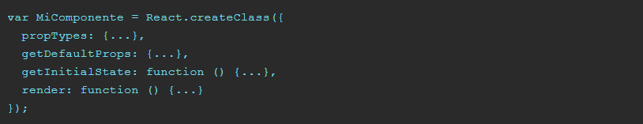
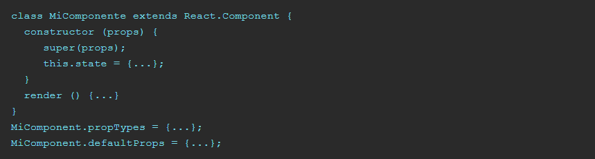
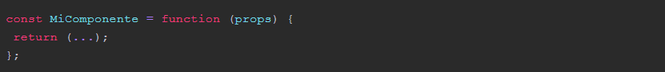
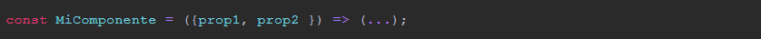
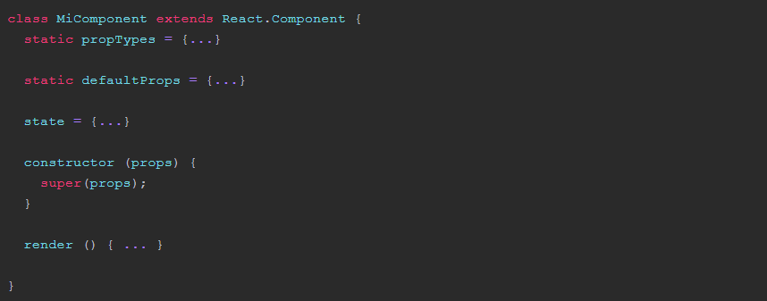

Ways to create a Component in React
A component in React can be created in different ways depending on the version of JavaScript we are using and the purpose of the component.
React component with ES5
This is the first form that there was and that you can find in many tutorials on the net. It is based on the createClass method of the React library and the structure would be the following:
Imagine you have this function:
The createClass method is passed an object that contains the typical functions of the life cycle if they are to be used, the render method, the propTypes, the initial state would be configured in the getInitialState function and the default props are defined in getDefaultProps.
React with ES6 (or ES2015)
With the new JavaScript standard we can use classes and in this case, we can "inherit" the React.Component object. The creation of a component using this syntax would be as follows:
When using the syntax of classes, we have a constructor method where we configure the initial state and the properties are received. The render method is one more function within the class and in this case the propTypes are defined outside the class as a property just like the defaultProps
React component as a function
Another way to create a component in React, with the new standard is to create it as a function. This form is used when the component is purely representational or stateless.
When is it better to create a component in this way? If in your component you only use the render method, and you are not using the state, it is better to define it as a function. In this way your final application will have better performance.
You can even apply the latest features of ES2015 as object destructuring for properties and arrow functions to define the function. It would be something like this:
Using ES7
Although version 7 of ECMAScript is not yet approved or implemented by browsers, we can use it in our code using Babel and the preset stage-0 for it.
What is the difference with respect to ES6? ES7 introduces the Property Initialiazers that we can apply to the defaultProps and the propTypes so that they are included within the definition of the class.
And it can also be applied to the initial state, defining it outside the constructor method. This would be the syntax:
As you can see, there are several ways to create a React component, all are valid, it only depends on the use case and the ECMAScript specification that you want to use.
The most common today is to use the class version of ES2015 or the version as a function in the case of stateless components. Although if you use babel stage-0 nothing prevents you from using the Property Initialiazers and prepare your components for ES7.